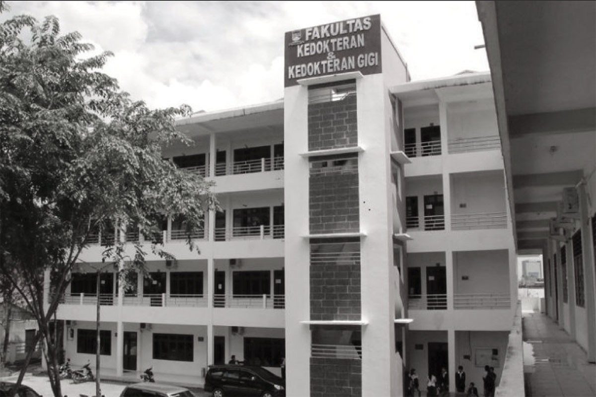
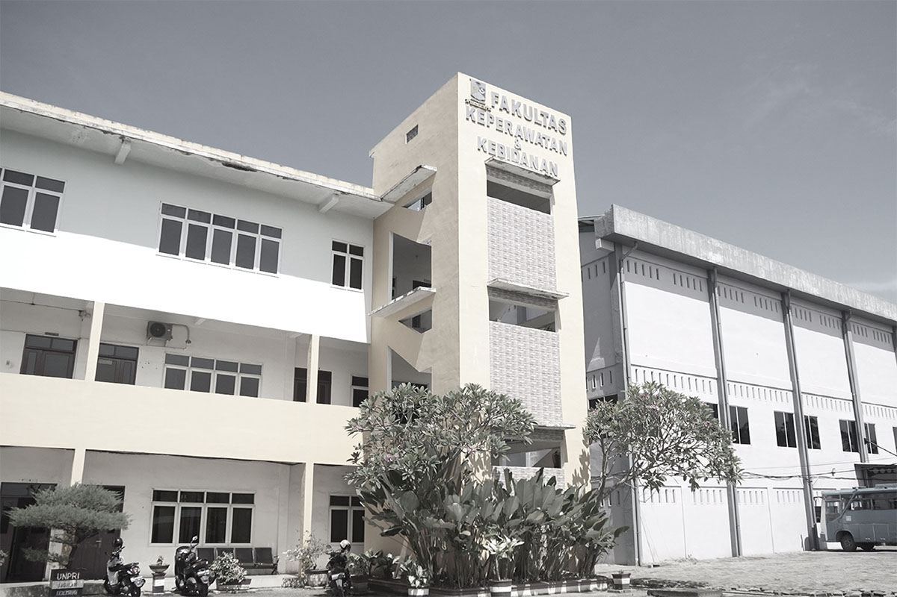
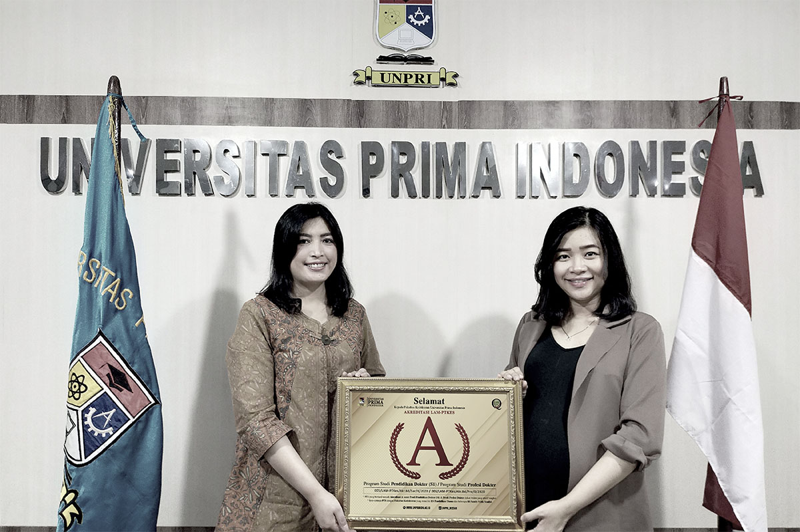

Sejarah UNPRI
Ringkasan Singkat Universitas Prima Indonesia (UNPRI)
Sejak 13 Oktober 2005, UNPRI tumbuh sebagai universitas multikultural, inklusif, dan progresif, terus memperluas program, fasilitas, serta ekosistem pendidikan-kesehatan untuk mendukung pembelajaran, riset, dan kolaborasi.
2005
Pendirian Universitas Prima Indonesia sebagai universitas multikultural, inklusif, dan progresif.
- 13 Oktober 2005 — UNPRI resmi berdiri berdasarkan Izin Menteri Pendidikan Nasional No. 151/D/0/2005.
- Pada masa awal, UNPRI membuka 12 program studi sebagai komitmen memajukan pendidikan tinggi di Indonesia;
-
S1 Kesehatan Masyarakat D3 Keperawatan S1 Ilmu Keperawatan S1 Teknik Informatika S1 Sistem Informasi S1 Teknik Industri S1 Teknik Elektro D3 Keuangan dan Perbankan S1 Manajemen S1 Akuntansi S1 Agroteknologi S1 Agribisnis
- Pendidikan berkembang dari bidang kesehatan, teknologi, teknik, bisnis, hingga pertanian.

13 Oktober 2005,
"Awal Perjalanan UNPRI"

Perjalanan UNPRI dimulai dengan komitmen untuk membangun pendidikan tinggi yang inklusif dan memberikan kontribusi nyata bagi masyarakat.
Universitas Prima Indonesia
Perjalanan Awal UNPRI

2009
1
Pembangunan Kampus Pertama
Pembangunan dan pengembangan kampus pertama menjadi fase penting dalam pertumbuhan awal UNPRI, termasuk fasilitas akademik dan olahraga.
Program Studi Baru
UNPRI memperluas bidang akademik dengan membuka beberapa program studi baru.
Program Studi
Pendidikan Bahasa dan Sastra Indonesia, Pendidikan Bahasa Inggris, Pendidikan Dokter, Pendidikan Dokter Gigi, Psikologi, dan Hukum.
2006 - 2009
2006–2009, "Pembangunan & Pengembangan"
Pembangunan kampus pertama menjadi fondasi pengembangan fasilitas akademik dan pertumbuhan program studi UNPRI.
Program Studi yang baru ;
Perkembangan
2006 · Pengembangan kampus dan fasilitas akademik pertama.
2009 · Perluasan program akademik di berbagai bidang.
2010 –14
2010–2014, "Ekspansi Infrastruktur & Kesehatan"
UNPRI memperluas infrastruktur akademik dan mulai memperkuat ekosistem rumah sakit pendidikan untuk mendukung pendidikan klinik.
- 2010 — pembangunan gedung kampus baru di Jalan Brigjen Katamso.
- 2012 — berdirinya Rumah Sakit Gigi dan Mulut Prima sebagai rumah sakit pendidikan.
- 2013–2014 — berdirinya RS Royal Prima Medan dan penguatan pendidikan klinik.
Era 3
Pengembangan Pendidikan Kesehatan
Program Kesehatan
Pendidikan kedokteran gigi, profesi dokter gigi, dan profesi keperawatan berkembang untuk memperkuat ekosistem pendidikan kesehatan.
PRIMA
GIGI
ROYAL
Ekosistem Kesehatan
Rumah sakit pendidikan mendukung pembelajaran klinik, pelatihan profesi, dan pengembangan pendidikan kesehatan.
Era 4
2016
2019
Penguatan Pascasarjana
UNPRI memperluas pendidikan pascasarjana melalui berbagai program magister dan doktoral.
Bidang Pendidikan
Manajemen, Akuntansi, Hukum, Pendidikan Bahasa Indonesia, Kesehatan Masyarakat, Ilmu Biomedik, dan Kenotariatan.
2016 –20
2016–2020, "Penguatan Akademik & Pascasarjana"
Periode ini ditandai dengan pengembangan pendidikan pascasarjana, program kesehatan strategis, serta penguatan jenjang doktoral.
Program Pascasarjana
Magister
Lintas Disiplin
Doktor
Ilmu Kedokteran
Tonggak Penting
2016 · Empat program magister diluncurkan.
2018 · Pengembangan program strategis bidang kesehatan.
2020 · Akreditasi "A" pertama untuk Pendidikan Dokter dan Profesi Dokter.
2021 –25
2021–2025, "Kampus Modern & Reputasi Global"
UNPRI memasuki fase baru dengan peresmian Kampus Utama 23 lantai, penguatan akreditasi, ekspansi kampus, serta pencapaian reputasi nasional dan internasional.
- 2021 — Kampus Utama 23 lantai diresmikan sebagai pusat pendidikan, riset, dan kolaborasi.
- 2022–2023 — peningkatan jumlah program studi berakreditasi "Unggul" dan pembukaan program spesialis.
- 2024 — UNPRI memperoleh Akreditasi Institusi "Unggul".
- 2025 — masuk QS Asia University Rankings dan memperluas program spesialis serta akreditasi internasional.
Era 5
Kampus Utama 23 Lantai
Reputasi Global
Pada 2025, UNPRI masuk QS Asia University Rankings dengan posisi global 1.491 dan terus memperkuat reputasi akademiknya.
ASIA
Program Spesialis
UNPRI memperluas pendidikan kesehatan melalui berbagai program spesialis kedokteran dan profesi.
2022
Akreditasi "Unggul"
Sejumlah program studi memperoleh akreditasi "Unggul" sebagai bentuk peningkatan mutu akademik.
Program Studi
Magister Ilmu Kedokteran Gigi, Magister Kedokteran Klinik, dan Doktor Ilmu Kedokteran.
2022
"Akreditasi Unggul & Program Spesialis"
UNPRI memperkuat mutu akademik sekaligus memperluas bidang pendidikan kesehatan melalui pembukaan program spesialis.
Program Baru
Program Spesialis Kedokteran Keluarga dan Layanan Primer (SPKKLP).
2023 –24
Perluasan Program Studi
UNPRI terus menambah program studi berakreditasi "Unggul" serta program spesialis dan profesi.
Kampus Cabang Pekanbaru
Pengembangan jaringan kampus dilakukan melalui pembukaan program Manajemen, Psikologi, Sistem Informasi, Pendidikan Dokter, Profesi Dokter, dan Magister Kesehatan Masyarakat.
2024
"Akreditasi Institusi Unggul"
UNPRI memperoleh Akreditasi Institusi "Unggul" berdasarkan Lisensi No. 510/SK/BAN-PT/Ak/PT/V/2024 sebagai bukti penguatan mutu institusi dan program akademik.
Program Studi Unggul
S1 Manajemen, S1 Hukum, S1 Kesehatan Masyarakat, Magister Ilmu Biomedik, dan S1 Agribisnis.
Program Baru
Magister Keperawatan serta pengembangan program pendidikan kesehatan di kampus cabang Pekanbaru.
2025
QS Asia University Rankings
UNPRI masuk dalam QS Asia University Rankings dengan posisi global 1.491.
UniRank 2025
UNPRI berada pada peringkat 244 nasional dan 7.994 global.
Akreditasi Internasional
Akreditasi internasional IAAHEH untuk S1 Pendidikan Dokter dan Program Profesi Dokter.
2025
"Reputasi Global & Kepemimpinan Pendidikan Spesialis"
UNPRI memperkuat posisi sebagai perguruan tinggi swasta dengan pengembangan pendidikan tinggi dan kesehatan berstandar internasional.
Program Spesialis & Profesi
Spesialis Oftalmologi, Kardiologi dan Kedokteran Vaskular, Obstetri dan Ginekologi.
Spesialis Anestesiologi dan Terapi Intensif, Penyakit Dalam, serta Bedah.
Program Pendidikan Profesi Psikologi.
ASIA
Capaian 2025
UNPRI menegaskan perannya dalam pengembangan pendidikan tinggi dan kesehatan dengan memperluas program spesialis, profesi, serta kerja sama berstandar internasional.
Lokasi Kampus
UNPRI terus bertumbuh dengan ekosistem pembelajaran terintegrasi yang didukung fasilitas modern dan jaringan rumah sakit pendidikan di berbagai wilayah.
Kampus Utama
Jalan Sampul Ayahanda No. 3, Sei Putih Barat, Medan Petisah, Medan, Sumatera Utara 20118
Kampus Cabang Pekanbaru
Pengembangan jaringan pendidikan UNPRI melalui berbagai program akademik dan kesehatan.